Warning: le package 'divent' a été compilé avec la version R 4.5.3
Le chargement a nécessité le package : Rcpp
BCI_50ha_abd %>%# Declare it is an "abundances" objectas_abundances() %>%autoplot()
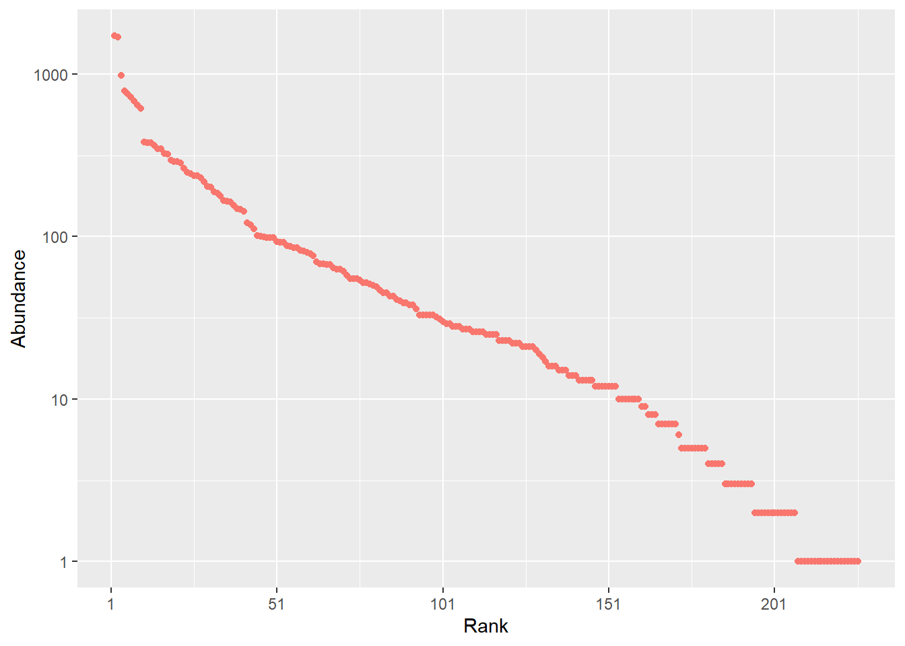
max(BCI_50ha_abd)
[1] 1717
2.2 Broken stick
Random distributions are created by divent::rxxx()functions.
rcommunity(# One community1,# Number of treessize =10000,# Number of speciesspecies_number =300,# Distributiondistribution ="bstick") %>%# Whittaker plotautoplot()
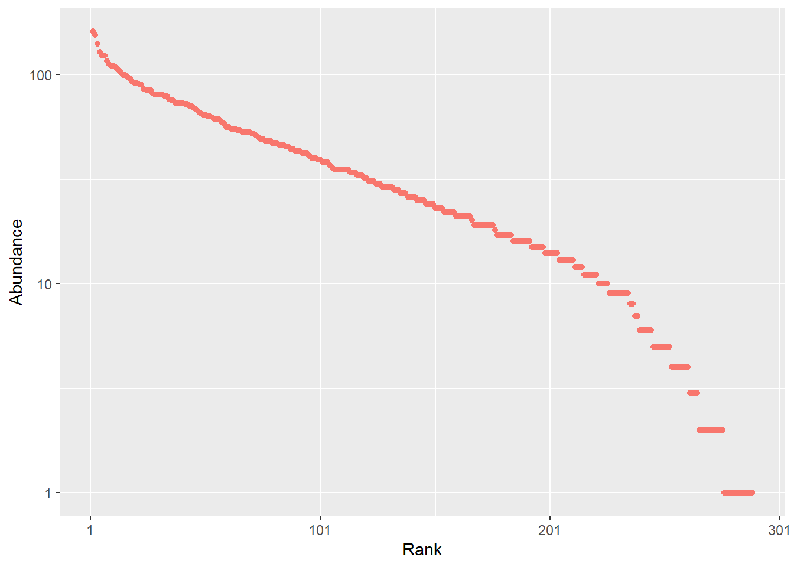
2.3 Geometric
Random distribution.
rcommunity(# One community1,# Number of treessize =10000,# Number of speciesspecies_number =300,# Distributiondistribution ="geom",prob_geom =0.1) %>%# Whittaker plotautoplot()
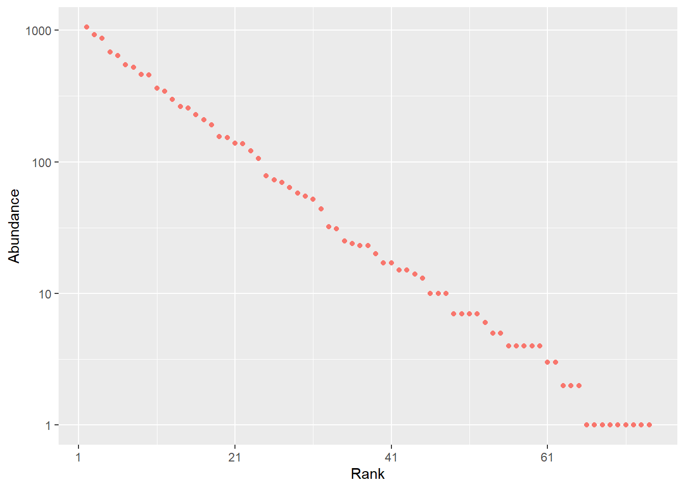
2.4 Lognormal
Random distribution.
rcommunity(# One community1,# Number of treessize =10000,# Number of speciesspecies_number =300,# Distributiondistribution ="lnorm",sd_lnorm =1) %>%# Whittaker plotautoplot()
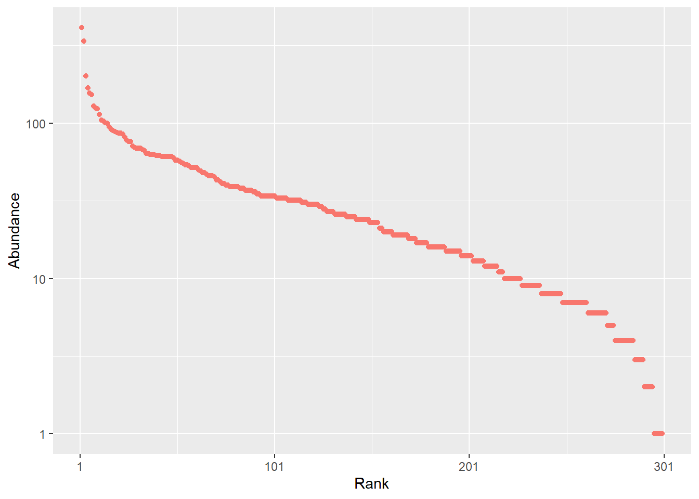
Modify the standard deviation.
2.5 Log-series
ggplot() +geom_function( fun = dgamma,args =list(shape =1),xlim =c(0,10))
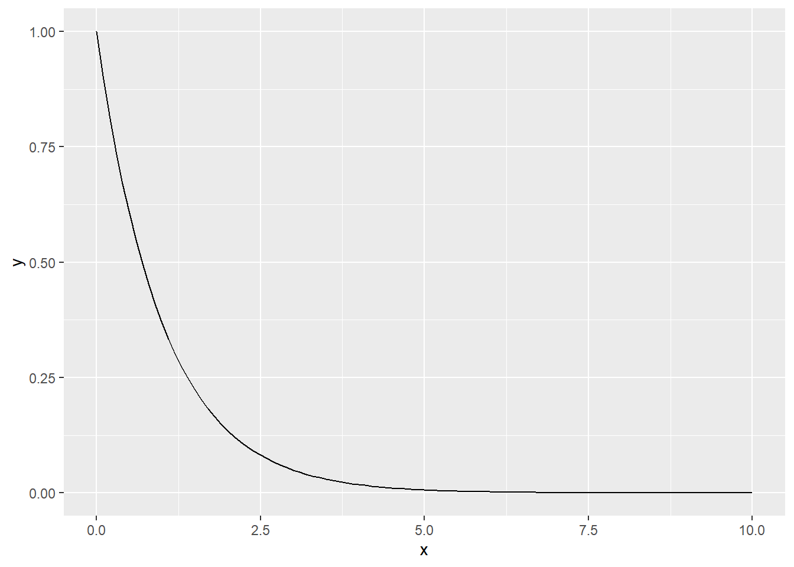
Random distribution.
rcommunity(# One community1,# Number of treessize =10000,# Number of species is calculated# Distributiondistribution ="lseries",fisher_alpha =40) %>%# Whittaker plotautoplot()
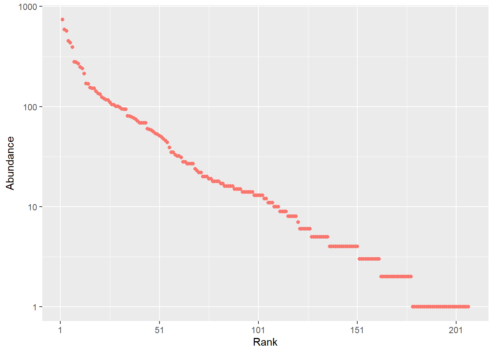
2.6 Estimate the parameters
Draw a very large lognormal distribution.
rcommunity(# One community1,# Number of trees = max supported integer valuesize = .Machine$integer.max,# Number of speciesspecies_number =300,# Distributiondistribution ="lnorm",sd_lnorm =1) %>%# Name itmutate(site ="Large log-normal") -> comm_large_lnorm#plot itautoplot(comm_large_lnorm)
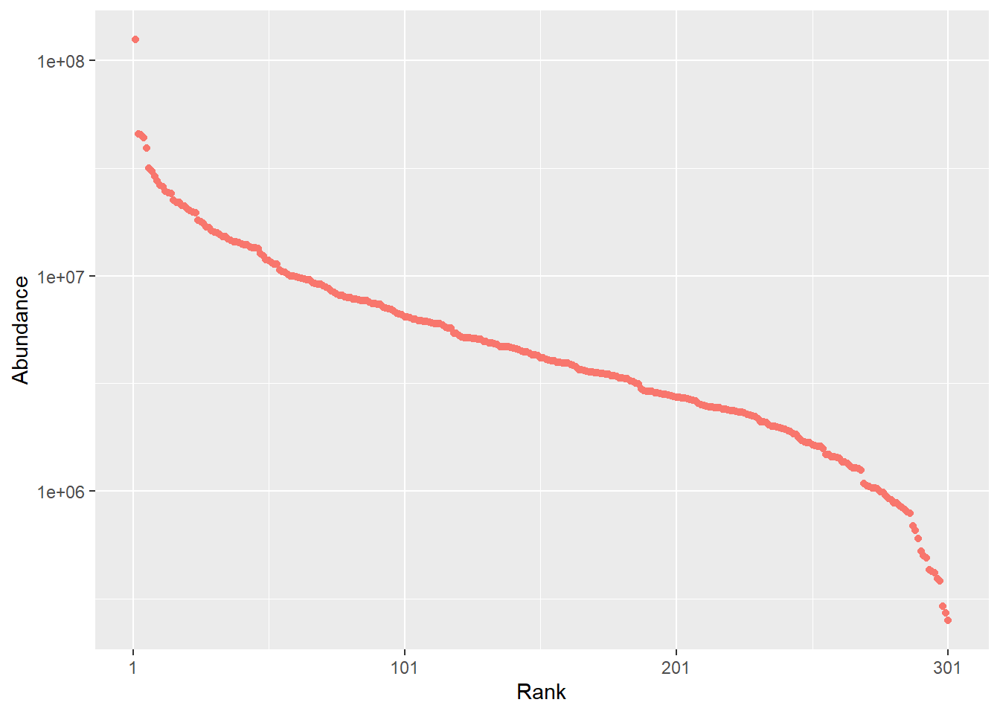
Sample it.
# Draw 3000 trees from the large communityrcommunity(1,size =3000,abd =as.numeric(comm_large_lnorm)) %>%# Name itmutate(site ="Small log-normal") -> comm_small_lnorm# Make a single tibble with all datacomm_large_lnorm %>%# Make a single tibblebind_rows(comm_small_lnorm) -> comm_lnorm# Plot the distributions and fit a lognormal modelautoplot(comm_lnorm, fit_rac =TRUE, distribution ="lnorm")
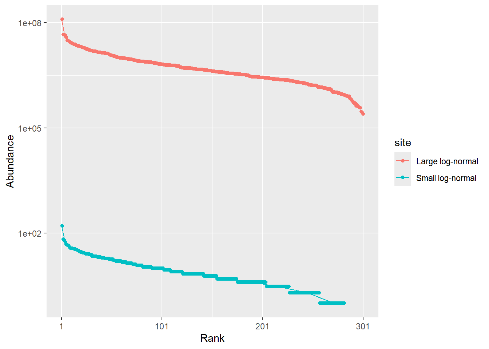
# Estimate the parametersfit_rac(comm_lnorm, distribution ="lnorm")
# A tibble: 2 × 3
site mu sigma
<chr> <dbl> <dbl>
1 Large log-normal 15.3 1.03
2 Small log-normal 1.85 1.02
#for BCIfit_rac(BCI_50ha_abd, distribution ="lnorm")
BCI_50ha_abd %>%as_abundances() %>%autoplot(fit_rac=TRUE, distribution ="lnorm")
2.7 Zero-sum multinomial distribution
BCI parameters \(\theta\) and \(m\) are estimated following Etienne (2005) with the untb package.
# BCI datalibrary("vegan")data(BCI)BCI_50ha <-colSums(BCI)# Don't load untb because of conflicts with dplyr::count() and select()# library("untb")if (file.exists("data/BCI_logkda.RData")) {# Use the saved result if available to save# computation resourcesload("data/BCI_logkda.RData")} else { BCI_50ha %>%# name conflict with dplyr::count() untb::count() %>%# requires pari/gp installed and in the search paths,# or use gp_binary argument untb::logkda() -> BCI_logkda# Save the resultsave(BCI_logkda, file ="data/BCI_logkda.RData")}BCI_50ha %>%# name conflict with dplyr::count() untb::count() %>%# Estimate theta and m untb::optimal.params(log.kda = BCI_logkda) %>%print() -> BCI_params
theta m
47.6001882 0.0926531
The distribution of the local community is derived. \(J\) is that of BCI and \(m\) was estimated previously.
Warning: le package 'sads' a été compilé avec la version R 4.5.3
Le chargement a nécessité le package : stats4
Le chargement a nécessité le package : bbmle
Warning: le package 'bbmle' a été compilé avec la version R 4.5.3
Attachement du package : 'bbmle'
L'objet suivant est masqué depuis 'package:dplyr':
slice
# Number of species in the local communitySvolkov(theta, m, J) %>%# Must be integers for the simulationround() %>%# Draw the species abundancesrvolkov(theta, m, J) %>%# Make it an abundances object top plot itas_abundances() %>%# Whittaker plotautoplot() -> BCI_sim_neutral
Warning in Svolkov(theta, m, J): The use of this function outside sads core
code is deprecated and will be removed in a future version!
Warning in regularize.values(x, y, ties, missing(ties), na.rm = na.rm):
suppression des ex-aequos de 'x'
library("vegan")data(BCI)BCI %>%# Make an abundances objectas_abundances() %>%# Make all plot weights equalsmutate(weight =1) %>%# Gather all 50 plotsmetacommunity() %>%# Name itmutate(site ="BCI") -> BCI_allautoplot(BCI_all, fit_rac =TRUE, distribution ="lnorm")
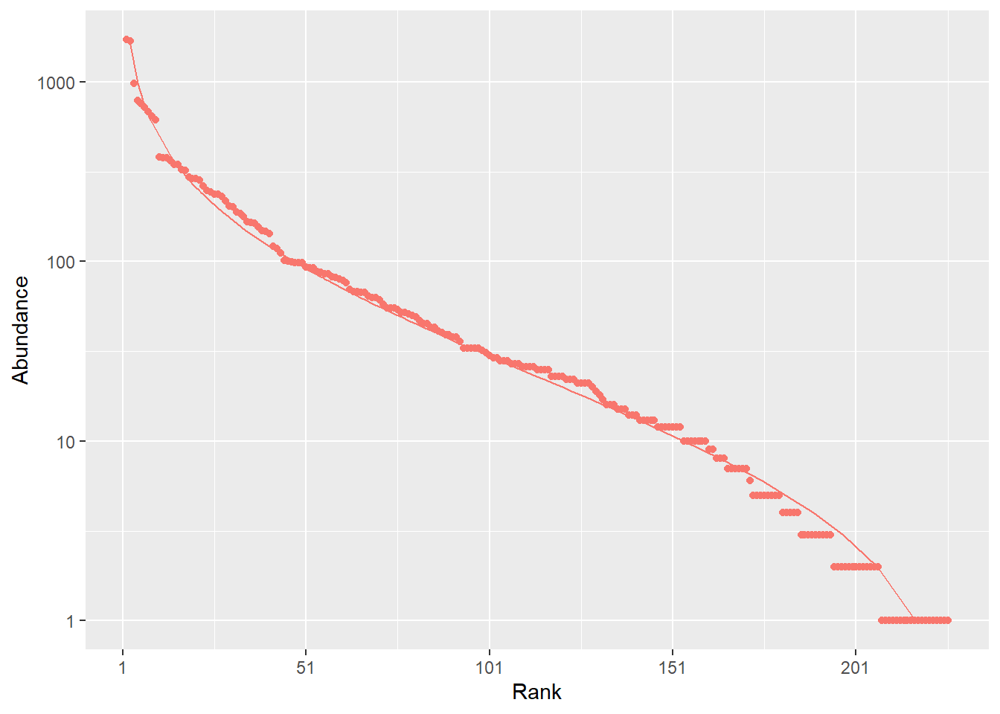
fit_rac(BCI_all, distribution ="lnorm")
# A tibble: 1 × 3
site mu sigma
<chr> <dbl> <dbl>
1 BCI 3.14 1.79
Accumulate subplots in random order (Monte-Carlo). Plot the expectation and the confidence interval of the number of species with respect to the number of samples.
BCI %>%specaccum() %>%plot()
Warning in cor(x > 0): l'écart type est nul
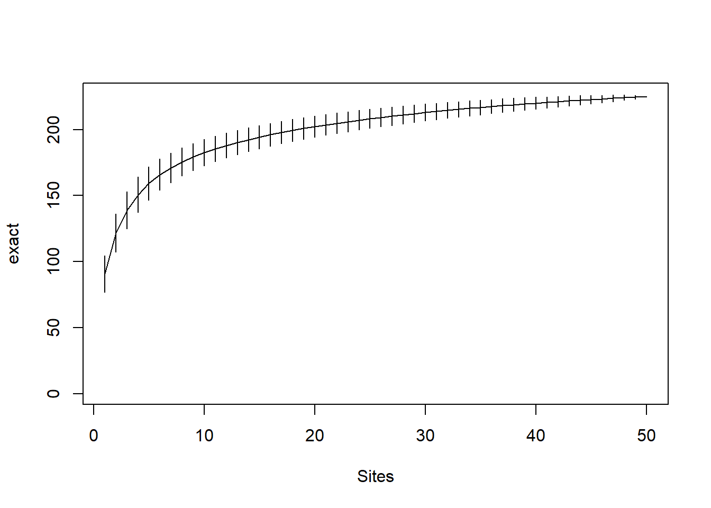
3.3 Accumulation curve
Compute the expected accumulation curve of BCI up to twice the sampling effort, with its confidence interval.
# Number of trees in BCIBCI_n <-abd_sum(BCI_all, as_numeric =TRUE)# Asymptotic richnessBCI_richness <-div_richness(BCI_all, as_numeric =TRUE)BCI_all %>%accum_hill(levels =seq(from =1, to =2* BCI_n, by =10),# Run simulations to estimate uncertainty.# Start with 10 simulations, run 100 latern_simulations =10, ) %>%autoplot() +geom_vline(xintercept = BCI_n, linetype =2) +geom_hline(yintercept = BCI_richness, linetype =1)
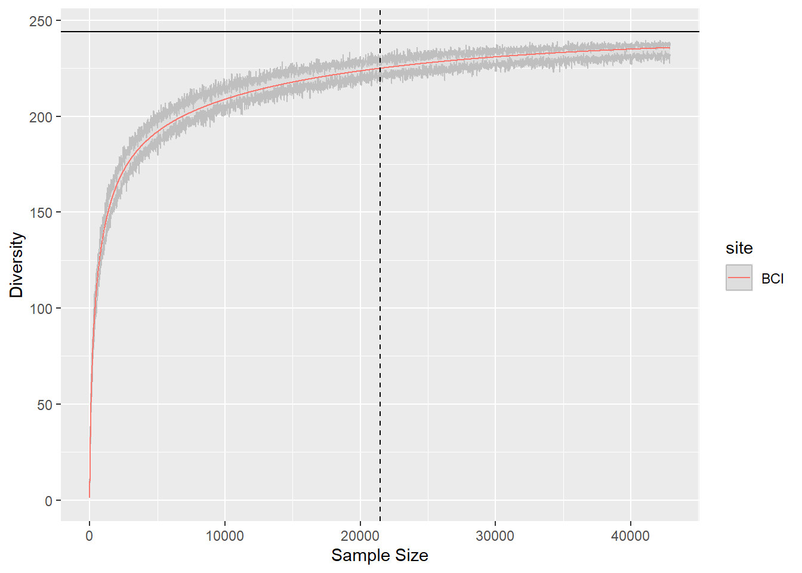
4 Canonical lognormal
ggplot seems to bug with weighted, bounded density and log scale.
# Number of trees per hectarep6_density <-abd_sum(p6_abundances, as_numeric =TRUE) /6.25# Richnessp6_abundances %>%div_richness(level =round(p6_density))
# A tibble: 1 × 6
site weight estimator order level diversity
<chr> <dbl> <chr> <dbl> <dbl> <dbl>
1 Paracou 6 6.25 SAC 0 567 159.
# A tibble: 1 × 6
site weight estimator order level diversity
<chr> <dbl> <chr> <dbl> <dbl> <dbl>
1 Paracou 6 6.25 jackknife 0 5666 383.
6 Shannon
6.1 Information function
Information brought by an individual: \(I(p_s) = \ln(1 / p_s)\).
ggplot() +# Increase the default number of points (101 to 1001) for precisiongeom_function(fun = \(p) {log(1/ p)}, n =1001) +labs(x ="Probability", y ="Information")
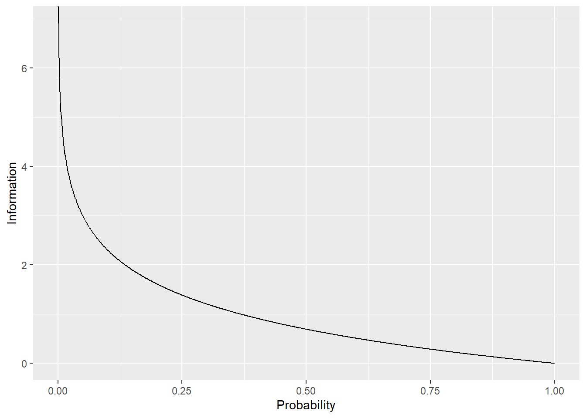
Information brought by a species: \(p_s \ln(1 / p_s)\).
ggplot() +geom_function(fun = \(p) {p *log(1/ p)}, n =1001) +labs(x ="Probability", y ="Information")
Warning: Removed 1 row containing missing values or values outside the scale range
(`geom_function()`).
Information brought by an individual: \(I(p_s) = \ln_q(1 / p_s)\).
ggplot() +# Increase the default number of points (101 to 1001) for precisiongeom_function(fun = \(p) {ln_q(1/ p, q =0)}, n =1001, aes(color ="0")) +geom_function(fun = \(p) {ln_q(1/ p, q =1)}, n =1001, aes(color ="1")) +geom_function(fun = \(p) {ln_q(1/ p, q =2)}, n =1001, aes(color ="2")) +scale_y_continuous(limits =c(0, 10)) +labs(x ="Probability", y ="Information", color ="q")
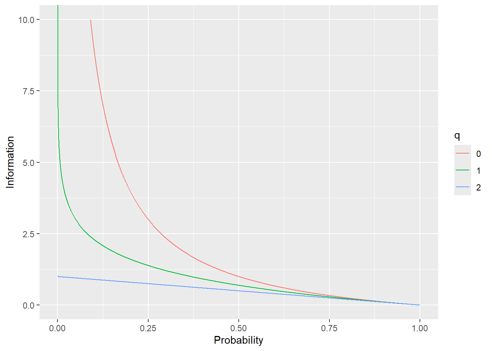
Information brought by a species: \(p_s \ln_q(1 / p_s)\).
ggplot() +# Increase the default number of points (101 to 1001) for precisiongeom_function(fun = \(p) {p *ln_q(1/ p, q =0)}, n =1001, aes(color ="0")) +geom_function(fun = \(p) {p *ln_q(1/ p, q =1)}, n =1001, aes(color ="1")) +geom_function(fun = \(p) {p *ln_q(1/ p, q =2)}, n =1001, aes(color ="2")) +labs(x ="Probability", y ="Information", color ="q")
Warning: Removed 1 row containing missing values or values outside the scale range
(`geom_function()`).
Removed 1 row containing missing values or values outside the scale range
(`geom_function()`).
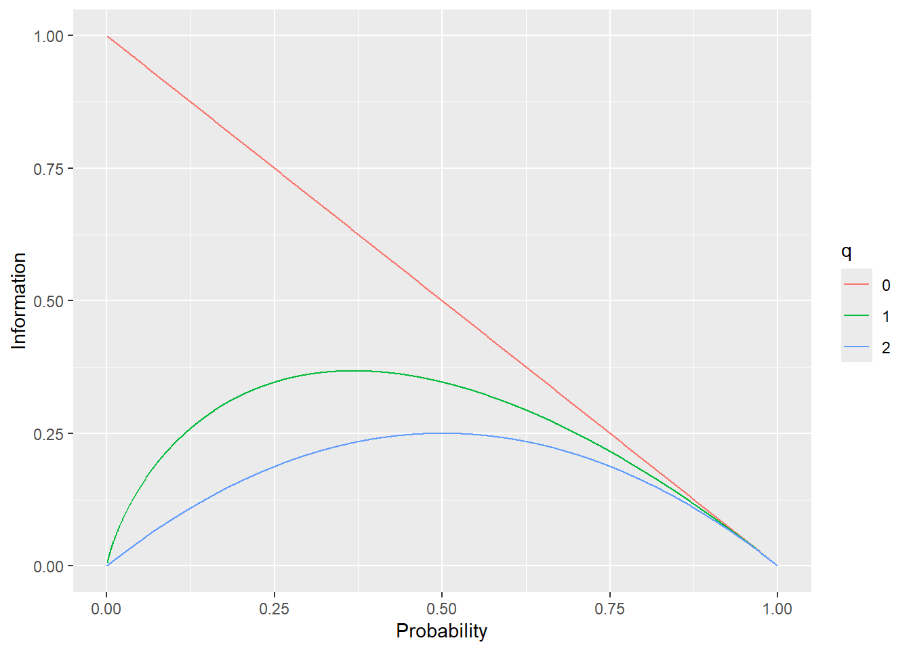
8.2 Paracou 6
Diversity profile.
p6_abundances %>%profile_hill() %>%autoplot() +# Don't print the legendtheme(legend.position ="none")
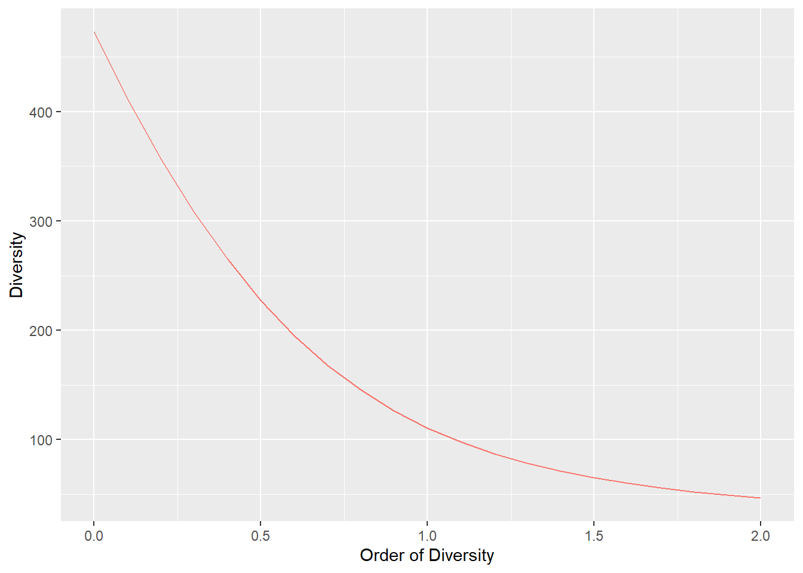
Compare estimators.
p6_abundances %>%profile_hill(estimator ="UnveilJ") %>%# Use the site name to store the estimator's namemutate(site ="UnveilJ") %>%bind_rows( p6_abundances %>%profile_hill(estimator ="ChaoJost") %>%mutate(site ="ChaoJost") ) %>%bind_rows( p6_abundances %>%profile_hill(estimator ="naive") %>%mutate(site ="naive") ) %>%autoplot() +labs(color ="Estimator")
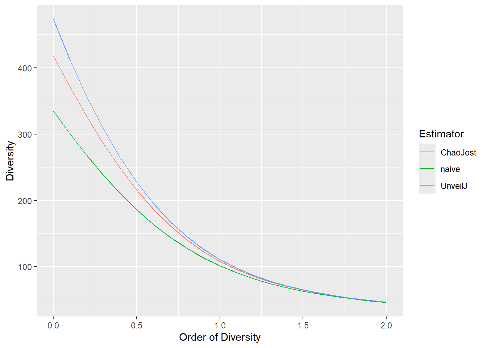
Extreme values.
The reciprocal of the Berger-Parker index (Berger and Parker 1970) is the rarity of the most abundant species \(^{+\infty}D\).
# q = 1000 is enough for infinitydiv_hill(p6_abundances, q =1000)
# A tibble: 1 × 5
site weight estimator order diversity
<chr> <dbl> <chr> <dbl> <dbl>
1 Paracou 6 6.25 UnveilJ 1000 13.3
# Compare to p6_abundances %>%# Extract proobabilitiesas_probabilities(as_numeric =TRUE) %>%# Max valuemax() %>%# Reciprocal`^`(-1)
# A tibble: 4 × 5
site weight estimator order diversity
<chr> <dbl> <chr> <dbl> <dbl>
1 site_1 20 naive 1 2
2 site_2 21 naive 1 2.00
3 site_3 1001 naive 1 1.01
4 site_4 1000 Single Species 1 1
9 Comparing diversity
9.1 Asymptotic diversity
Compare asymptotic diversity of Paracou and BCI, extend \(q\).
# Orders from 0 to 4q_seq_0_4 <-seq(from =0, to =4, by =0.1)profile_hill(p6_abundances, orders = q_seq_0_4) %>%bind_rows(profile_hill(BCI_all, orders = q_seq_0_4)) %>%autoplot()
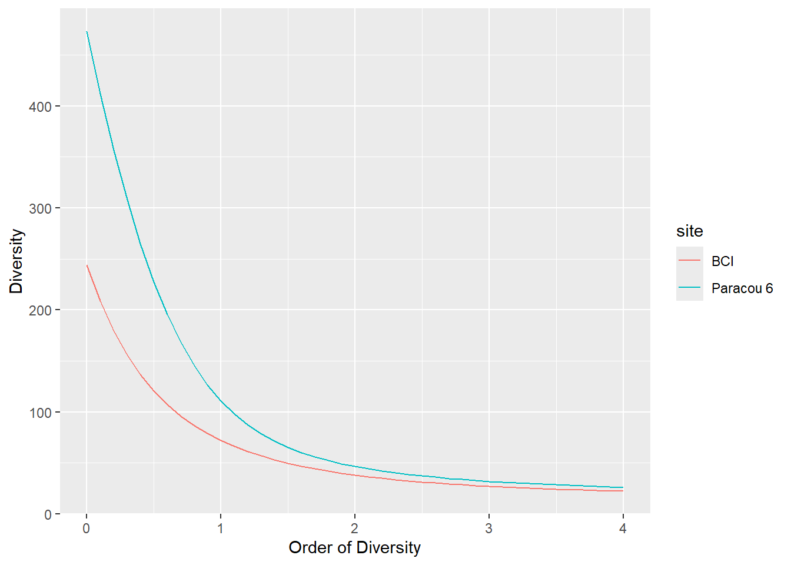
9.2 Standardized diversity
The sampling effort is very different: 50 ha in BCI, 6.25 ha in Paracou. The asymptotic estimation is less reliable in Paracou.
Compare diversity at the same sampling effort, say 10 ha.
# Number of trees in 10 hap6_n_10ha <-round(abd_sum(p6_abundances, as_numeric =TRUE) /6.25*10)BCI_n_10_ha <-round(sum(BCI_all) /5)
# A tibble: 1 × 5
site weight A B C
<chr> <dbl> <dbl> <dbl> <dbl>
1 Mock 3 species 6 3 2 1
library("ape")
Attachement du package : 'ape'
L'objet suivant est masqué depuis 'package:dplyr':
where
# Prepare the tree for convenience: make the branches twice longermock_3sp_tree$edge.length <-2* mock_3sp_tree$edge.lengthplot(mock_3sp_tree, direction ="downwards", srt =90)axis(2)
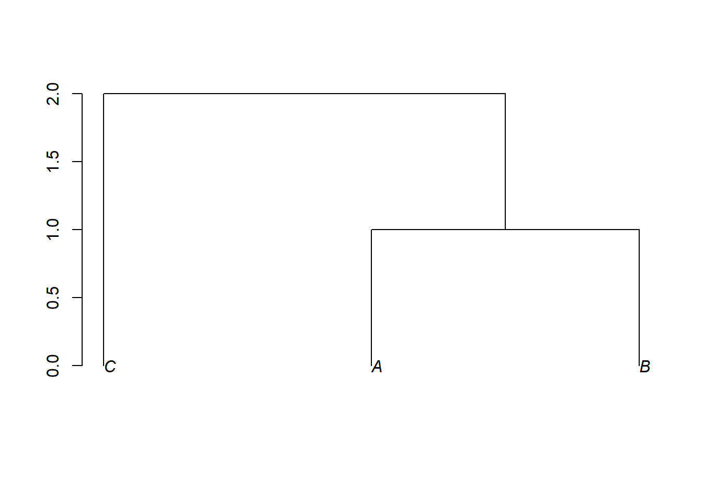
PD is the total length of branches
div_pd(mock_3sp_abd, tree = mock_3sp_tree)
# A tibble: 1 × 3
estimator order diversity
<chr> <dbl> <dbl>
1 naive 0 5
Rao.
ent_rao(mock_3sp_abundances, tree = mock_3sp_tree, estimator ="naive")
# A tibble: 1 × 5
site weight estimator order entropy
<chr> <dbl> <chr> <dbl> <dbl>
1 Mock 3 species 6 naive 2 0.528
The tree is normalized to height = 1 by default. Without normalization:
ent_rao( mock_3sp_abundances, tree = mock_3sp_tree, estimator ="naive", normalize =FALSE)
# A tibble: 1 × 5
site weight estimator order entropy
<chr> <dbl> <chr> <dbl> <dbl>
1 Mock 3 species 6 naive 2 1.06
10.2 Paracou 6
paracou_6_taxo is a taxonomic tree: distance is 1 between species of the same genus, 2 between genera of the same family, 3 between families.
plot(paracou_6_taxo, type ="fan", show.tip.label =FALSE)
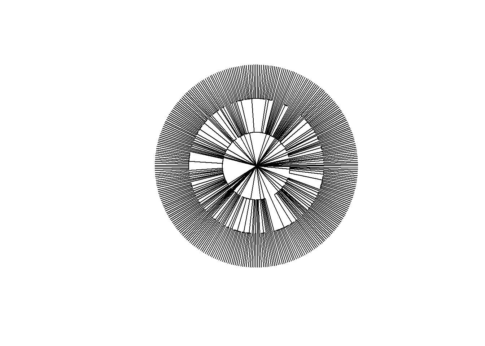
Calculate Rao’s entropy and phylogenetic entropy of order 2
ent_rao(p6_abundances, tree = paracou_6_taxo) %>%bind_rows(ent_phylo(p6_abundances, tree = paracou_6_taxo, q =2) )
# A tibble: 2 × 6
site weight estimator order entropy q
<chr> <dbl> <chr> <dbl> <dbl> <dbl>
1 Paracou 6 6.25 Lande 2 0.976 NA
2 Paracou 6 6.25 UnveilJ NA 0.949 2
Rao’s entropy is not an effective number of species, but the average phylogenetic distance between two individuals. The corresponding Hill number is:
div_phylo(p6_abundances, tree = paracou_6_taxo, q =2)
# A tibble: 1 × 4
site weight estimator diversity
<chr> <dbl> <chr> <dbl>
1 Paracou 6 6.25 UnveilJ 19.5
Diversity profile
profile_phylo(p6_abundances, tree = paracou_6_taxo) %>%autoplot()
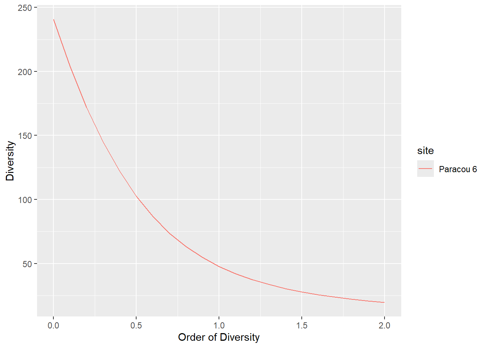
11 Functional diversity
11.1 Mock data
The same mock data is used. Distances between species is now assumed to be in the trait space. Distances between species.
# A tibble: 1 × 5
site weight estimator order entropy
<chr> <dbl> <chr> <dbl> <dbl>
1 Mock 3 species 6 naive 2 0.444
11.2 Paracou 6
The species traits are maximum height (95th percentile) and seed mass, maximum height (95th percentile) and seed mass. A distance matrix was built (see home practical). Distribution of distances between species.
Coordinates of species A, B and C in the trait space.
mock_pcoa$li
A1 A2
A -0.6454972 5.000000e-01
B -0.6454972 -5.000000e-01
C 1.2909944 2.355139e-16
Plot individuals in the trait space, with a small variability.
# Create coordinatestibble(Species =rep(names(mock_3sp_abd), times = mock_3sp_abd),x =rep(mock_pcoa$li[, 1], times = mock_3sp_abd),y =rep(mock_pcoa$li[, 2], times = mock_3sp_abd)) -> mock_3sp_ind# Choose variabilityvariability <-0.1# Mapmock_3sp_ind %>%# Add variabilitymutate(x = x +rnorm(n(), mean =0, sd = variability),y = y +rnorm(n(), mean =0, sd = variability) ) %>%ggplot(aes(x = x, y = y, color = Species)) +geom_point() +coord_fixed()
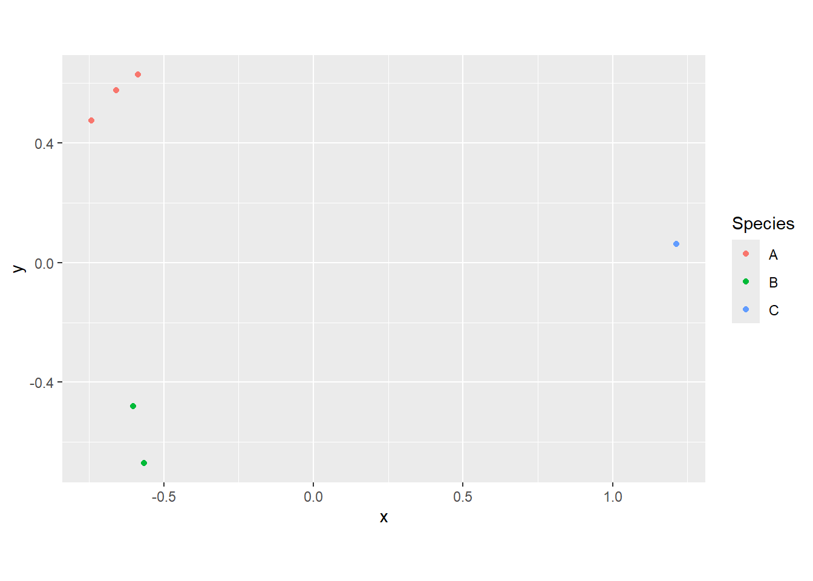
Diversity of the 6 individuals. First, without variability.
# Choose variabilityvariability <-0# Create the point setmock_3sp_ind %>%# Add variabilitymutate(x = x +rnorm(n(), mean =0, sd = variability),y = y +rnorm(n(), mean =0, sd = variability) ) %>%# Distance matrixdist() %>%as.matrix() -> mock_6ind_dist
Warning in dist(.): NAs introduits lors de la conversion automatique
# Delete the row and column name of the matrix (they are not species names)rownames(mock_6ind_dist) <-colnames(mock_6ind_dist) <-NULL# Total abundancemock_6ind_n <-nrow(mock_6ind_dist)# Similaritymock_6ind_Z <-1- mock_6ind_dist /max(mock_6ind_dist)# Abundances of individuals are 1, or any identical valuemock_6ind_abd <-rep(1, mock_6ind_n)# Diversityprofile_similarity( mock_6ind_abd, similarities = mock_6ind_Z,estimator ="naive") %>%autoplot()
! Sample coverage is 0, most estimators will return `NaN`.
! Sample coverage is 0, most estimators will return `NaN`.
! Sample coverage is 0, most estimators will return `NaN`.
! Sample coverage is 0, most estimators will return `NaN`.
! Sample coverage is 0, most estimators will return `NaN`.
! Sample coverage is 0, most estimators will return `NaN`.
! Sample coverage is 0, most estimators will return `NaN`.
! Sample coverage is 0, most estimators will return `NaN`.
! Sample coverage is 0, most estimators will return `NaN`.
! Sample coverage is 0, most estimators will return `NaN`.
! Sample coverage is 0, most estimators will return `NaN`.
! Sample coverage is 0, most estimators will return `NaN`.
! Sample coverage is 0, most estimators will return `NaN`.
! Sample coverage is 0, most estimators will return `NaN`.
! Sample coverage is 0, most estimators will return `NaN`.
! Sample coverage is 0, most estimators will return `NaN`.
! Sample coverage is 0, most estimators will return `NaN`.
! Sample coverage is 0, most estimators will return `NaN`.
! Sample coverage is 0, most estimators will return `NaN`.
! Sample coverage is 0, most estimators will return `NaN`.
! Sample coverage is 0, most estimators will return `NaN`.
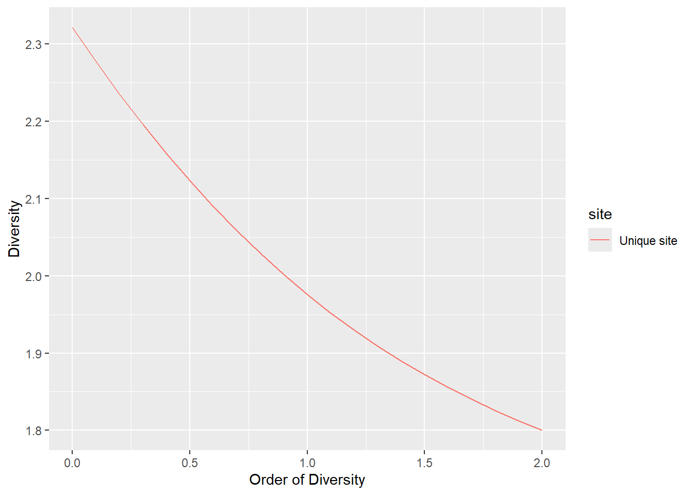
Change the variability (0.1 first) and run the code again.
# Values of q used for computation: default values of profile_xxx()orders <-seq(from =0, to =2, by =0.1)sapply(# Apply ent_tsallis to all orders orders,FUN = \(q) {# Get a number to obtain a matrix with sapplyent_tsallis(paracou_6_abd, q = q, as_numeric =TRUE) }) %>%# Each row contains a subbplot, each column an order, values are entropy# Calculate mean entropy (weights are equal)colMeans() %>%# Diversityexp_q(q = orders) %>%# Make a tibbletibble(order = orders,div_alpha = . ) %>%print() -> paracou_6_alpha_profile
paracou_6_profile %>%# paracou_6_profile is an object of class profile that can be plotted# The column to plot must be named diversityrename(diversity = div_alpha) %>%autoplot() +theme(legend.position ="none")
Berger, Wolfgang H., and Frances L. Parker. 1970. “Diversity of Planktonic Foraminifera in Deep-Sea Sediments.”Science 168 (3937): 1345–47. https://doi.org/10.1126/science.168.3937.1345.
Chao, Anne, and Lou Jost. 2012. “Coverage-Based Rarefaction and Extrapolation: Standardizing Samples by Completeness Rather Than Size.”Ecology 93 (12): 2533–47. https://doi.org/10.1890/11-1952.1.